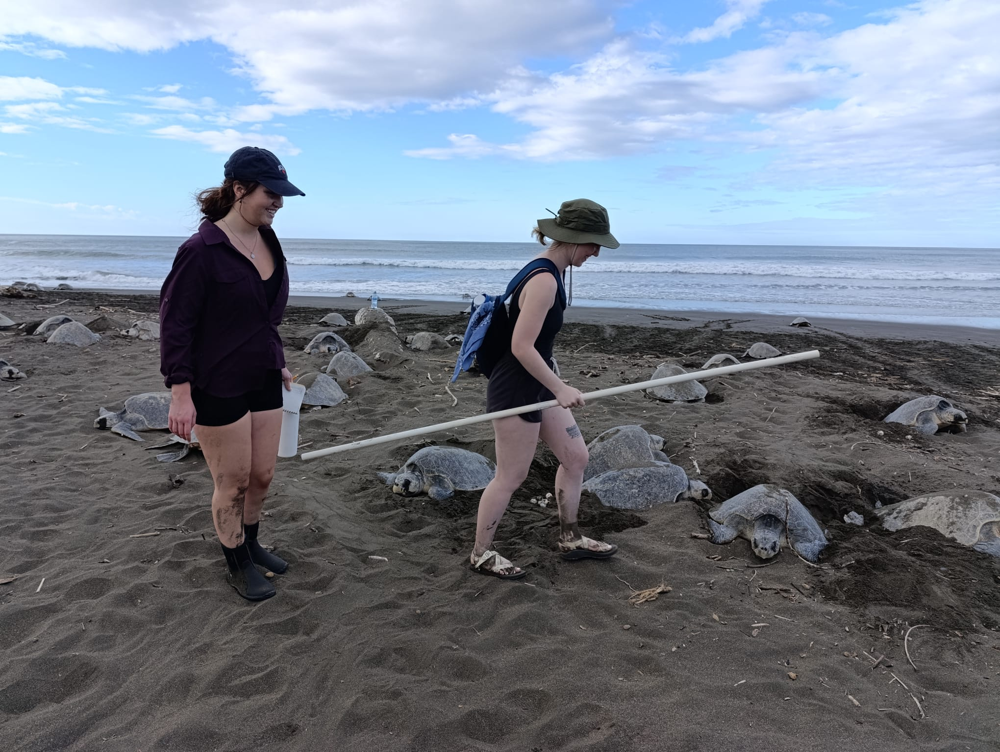

CSU Projects
Climate Justice Board Game
A project exploring climate justice through an interactive board game format.
Key Concepts: Environmental Policy, social justice, and climate action
Learn more:
Global Climate Justice: Learning Through Play
Climate change is one of the biggest challenges of our time, and it is not something that affects everyone equally. The more we have learned in this class, the more we have realized how deeply unfair the impacts of climate change tend to be. Entire communities —often the ones contributing the least to the problem— face higher rates of displacement, livelihood loss, environmental destruction, and countless other inequities. These injustices can often feel overwhelming, especially when comprehensive solutions are out of reach. This is why we decided to create Climate Justice: The Path to Sustainability and Equity, a board game designed to make these complex issues more understandable and engaging for young people. We wanted to take what we have been learning in class and turn it into something that can reach people in a new way: through a medium that is educational, fun, and accessible.
Why We Chose This Topic
Educational games are an effective way for people to learn without feeling pressured. They are interactive, allowing the players to experiment and make decisions, which feels much more personal than simply reading a textbook or watching a video. When we thought about how heavy the topics in this class are —displacement, food insecurity, environmental racism, etc.— we realized that these issues can often seem abstract and distant, especially for youth. Our motivation for choosing this topic was to create something that brings these issues to life in a way that people can understand and relate to, even if they don’t have a background in climate studies. We also wanted to make this game because we saw many young people wanting to get involved in climate action but not knowing where to start. A board game felt like a good way to introduce people to these topics in a way that isn’t overwhelming. It’s also a way to spark curiosity and show that climate justice isn’t just about science but also about people, communities, and fairness.
What We Wanted to Achieve
The goal of the game is to educate and inspire players to think critically about climate justice issues while having fun at the same time. The target audience is middle and high school students, but it could also work for anyone new to climate justice-related topics. The game is designed to help players:
Understand Real-World Problems: Each module in the game focuses on issues like water scarcity, health inequities, or environmental racism, using real-world case studies to make these problems relatable.
Think Systematically: The game mechanics encourage players to see how different issues are interconnected. Addressing water scarcity may also impact food security or displacement.
Feel Empowered to Act: By showing how different solutions can be implemented, the game emphasizes that change is possible, even when the problems seem overwhelming.
We also wanted the game to spark conversations. By playing with friends or family, we hope that people start discussing these issues with others in a more approachable and organic way. We hope that the game can plant the seeds for more significant actions down the line.
Conclusion
Climate Justice: The Path to Sustainability and Equity is more than a class project. It is ultimately an effort to make large, overwhelming issues feel more manageable and relatable. The board game uses real-world case studies to teach players about climate justice in a way that is engaging and accessible, especially for young people who might feel disconnected from or hopeless about these topics. Creating the board game taught us about the power of education, the interconnectedness of climate issues, and the importance of creativity in activism.
Reflecting on this project, we are hopeful about the potential for justice-centered climate action. If a simple board game encourages people to think more critically about climate justice and discuss potential solutions, it could inspire action. This project has also shown us that education and advocacy do not have to look the same for everyone; sometimes, it can look like sitting around a table, rolling dice, and imagining a better world.
Sea Turtle Conservation Research (Costa Rica)
A research trip focused on the conservation efforts for endangered sea turtles
Research Topics: Nesting habits, climate change impacts, and community outreach.
Fieldwork Experience: Night patrols, data collection, and tagging turtles.
Photos Below:
